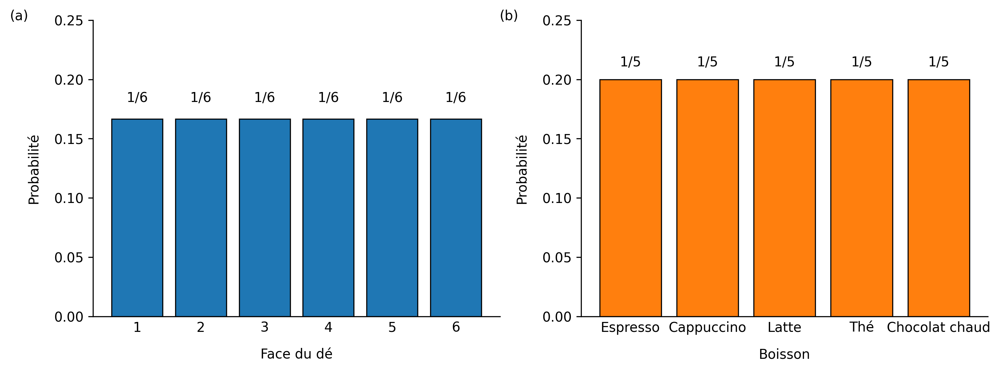
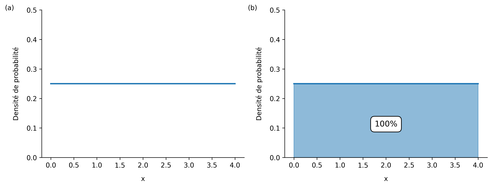
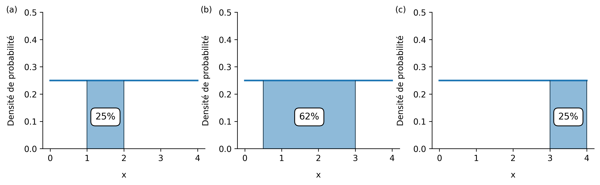
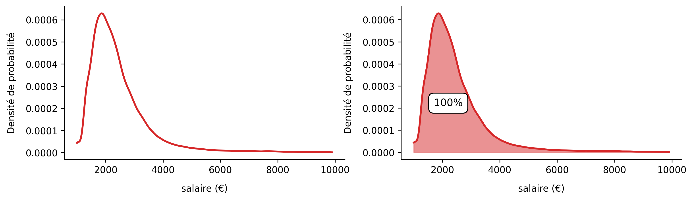
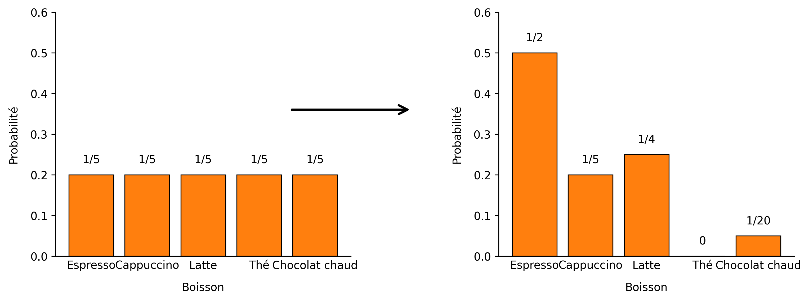

Bienvenue, vous êtes au bon endroit ! Comprendre ce qu'est une probabilité et comment on la calcule est essentiel pour bien saisir la notion de p-value. D'ailleurs, le p de p-value signifie tout simplement probabilité. Avec les notions fondamentales en main, la p-value n'aura plus rien de mystérieux pour vous, promis !
Probabilités élémentaires
Une probabilité sert à mesurer le hasard et à comprendre comment il se répartit. Autrement dit, elle nous dit à quel point un évènement est susceptible de se produire. Ainsi, la probabilité d'un évènement est un nombre réel compris entre 0 et 1 (ou entre 0% et 100%) :
- 0 signifie que l'évènement est impossible,
- 1 signifie que l'évènement est certain,
- toutes les autres valeurs forment un gradient, allant des évènements peu probables aux très probables.
Les mathématiciens et mathématiciennes notent $\mathbb{P}$ la mesure qui associe un évènement à sa probabilité. Dans certains cas simples, le calcul de probabilités est trivial et ne requiert que quelques manipulations anodines.
Une histoire de dé
Alice lance un dé à 6 faces supposé équilibré. On note $S$ l'évènement « obtenir un 6 ». Le calcul de sa probabilité devient alors immédiat : $$\mathbb{P}(S) = 1/6 \approx 0.17 \approx 17\%$$
Une histoire de café
Bob le chercheur se rend à la machine à café (distributeur) du laboratoire pour se prendre une boisson chaude avant de retourner à ses expériences. La machine propose 5 boissons différentes : Espresso, Cappuccino, Latte, Thé et Chocolat chaud. On suppose que Bob n'a pas de boisson préferée et choisit au hasard. On note $CC$ l'évènement « le Chocolat chaud est choisi ». Le calcul de $CC$ est également immédiat : $$\mathbb{P}(CC) = 1/5 = 0.2 = 20\%$$
En supposant que le dé est parfaitement équilibré et qu'Alice ne triche pas, et en supposant que Bob choisit aléatoirement sa boisson sans aucune préférence, les probabilités de tous les évènements possibles sont dites équiprobables, i.e., elles sont identiques pour chaque évènement (Figure 1).

L'Univers
Une notion particulièrement importante lorsqu'on s'intéresse aux probabilités est celle de l'univers. L'univers représente l'ensemble de tous les résultats possibles d'une expérience (toutes les possibilités). Par exemple, pour un jet de dé à 6 faces, l'univers est simplement l'ensemble des évènements : obtenir 1, obtenir 2, obtenir 3, obtenir 4, obtenir 5, obtenir 6. Pour le choix de la boisson chaude, l'univers est l'ensemble des évènements : choisir un Espresso, choisir un Cappuccino, choisir un Latte, choisir un Thé, choisir un Chocolat chaud.
L'univers est en quelque sorte un « super évènement » : on pourrait le définir comment étant l'évènement $U$ = « l'Espresso est choisi ou le Cappuccino ou le Latte ou le Thé ou le Chocolat chaud ». Étant donné qu'il contient tous les résultats possibles de l'expérience et puisque l'expérience elle-même produit nécessairement l'un de ces résultats, alors la probabilité de l'univers est toujours égale à 1 (100%) — c'est-à-dire que lorsqu'Alice jète son dé à 6 faces, elle a 100% de chances que le « super évènement » se réalise : elle tombera forcément sur un 1, ou un 2, ou un 3, ou un 4, ou un 5, ou un 6. De la même façon, il y a 100% de chances que Bob choisisse soit un Espresso, soit un Cappuccino, soit un Latte, soit un Thé ou soit un Chocolat chaud. Ce résultat semble trivial, mais est essentiel pour la suite.
N'ayez pas trop la tête dans les étoiles, d'autres notions importantes vont suivre !
Les variables aléatoires
Nous sommes obligés de faire un détour par de la terminalogie avant de poursuivre : on appelle variable aléatoire toute variable qui prend une valeur de façon aléatoire. Par exemple, si $F$ est la variable aléatoire représentant la face du dé sur laquelle Alice est tombée lors du jet, alors $F$ peut prendre les valeurs {1, 2, 3, 4, 5, 6}. En fait l'évènement « obtenir un 6 » est équivalent à l'évènement « $F = 6$ ». De la même manière, si $B$ est la variable aléatoire représentant la boisson choisie par Bob, $B$ peut prendre les valeurs {"Espresso", "Cappuccino", "Latte", "Thé", "Chocolat chaud"}. L'évènement « le Chocolat chaud est choisi » est alors équivalent à « $B = $ "Chocolat chaud" ».
On peut ainsi lister toutes les valeurs possibles qu'une variable aléatoire peut prendre et calculer les probabilités associées à chacune d'elles. En revanche, il est impossible de prédire avec certitude la valeur exacte qui apparaîtra lors d'une expérience particulière. En utilisant les variables aléatoires $F$ et $B$, on peut réécrire: $$\mathbb{P}(F = 6) = 1/6$$ $$\mathbb{P}(B = \text{"Chocolat chaud")} = 1/5$$
Dans ces deux exemples, les variables aléatoires $F$ et $B$ sont dites discrètes, i.e., elles ne peuvent prendre qu'un ensemble de valeurs distinctes bien définies pour chaque situation (6 pour le jet de dé et 5 pour le choix de la boisson). En d’autres termes, on peut dire d'une variable aléatoire qu'elle est discrète lorsqu'on peut compter le nombre de valeurs qu'elle peut prendre (même si l'on doit compter jusqu'à l'infini).
Quand les variables aléatoires deviennent continues
Comme l'indique le nom de ce chapitre, il existe des variables aléatoires continues : c'est le cas pour les expériences ayant une infinité de résultats possibles qui forment un continuum. Un exemple classique de ce genre de variables aléatoires concerne la taille des personnes : prenons par exemple $T$ la variable aléatoire qui représente la taille d'une personne prise au hasard dans la population française (adultes uniquement). Il n'existe pas seulement quelques tailles possibles, mais bien une infinité (un continuum) de sorte que $T$ peut théoriquement prendre n'importe quelle valeur possible entre disons 140 et 222 cm. En réalité, la taille exacte d'une personne dépend simplement de la précision de la mesure. Plus l'instrument est précis, plus on peut affiner la valeur obtenue. Par exemple, avec un mètre suffisament précis, on pourrait être en capacité de dire que telle personne mesure 184,123456 cm, ce qui serait différent d'une autre mesurant 184,123455 cm.
Lorsqu'on s'intéresse aux variables aléatoires continues, on ne va jamais chercher la probabilité que la variable aléatoire prenne une seule valeur précise — e.g., $\mathbb{P}(T=184)$ ou $\mathbb{P}(T=184,123456)$ — mais on voudra toujours chercher la probabilité qu'elle soit dans une certaine plage de valeurs — e.g., $\mathbb{P}(172 < T < 184)$ ou $\mathbb{P}(172,123 < T < 184,456)$. C'est un point absolument fondamental : il n'y a pas vraiment de sens à regarder quelle valeur exacte prend une variable aléatoire continue étant donné qu'il y a une infinité de résultats possibles.
Pour faire le lien entre l'univers et les variables aléatoires continues, dans l'exemple de $T$, on peut en quelque sorte dire que son univers est l'ensemble de toutes les tailles comprises entre 140 et 222 cm. On a ainsi $\mathbb{P}(140 < T < 222) = 1 \;(100\%)$. Il y a toujours deux façons équivalentes d'interpréter un résultat comme celui-ci : soit on dit que lorsqu'on tire une personne au hasard dans la population française, il y a 100% de chances que cette personne mesure entre 140 et 222 cm (en supposant que c'est notre univers), soit on dit que 100% de la population française mesure entre 140 et 222 cm.
Densité de probabilité
Vous suivez encore ? Bravo... mais le plus passionnant reste à découvrir. Encore une notion fondamentale abordée ici : la densité de probabilité. Dans le cas des variables aléatoires continues, la densité de probabilité permet simplement de définir comment le hasard est réparti sur tout l'univers : c'est précisément cette densité qui donne une indication sur le fait que, si l'on choisit une personne au hasard dans la population française, il y a plus de chances pour que cette personne mesure entre 172 et 184 cm plutôt qu'entre 190 et 202 cm. Encore plus fort : grâce à la densité de probabilité, il devient possible de connaître toutes les probabilités parmi l'infinité de possibilités, et ce pour n'importe quel intervalle que vous choisissez ! Chaque recoin de l'univers peut être exploré.
La densité de probabilité d'une variable aléatoire est une fonction mathématique définie sur tout l'univers. Pour calculer la probabilité que la variable aléatoire tombe dans un intervalle donné, il suffit de calculer l'aire sous la courbe de la densité de probabilité entre les deux bornes de l'intervalle. La notion d'aire sous la courbe est probablement la plus importante de ce voyage au pays des probabilités, et sans doute même la clé pour comprendre les variables aléatoires continues. En fait, calculer une p-value revient à calculer une aire sous une certaine densité de probabilité dans un certain intervalle... Mais patience, nous démystifierons cette singularité en détail dans la prochaine vignette. Explorons d'abord quelques exemples concrets.
Un nombre entre 0 et 4
Charlie choisit au hasard un nombre dans l'intervalle [0, 4] et on s'intéresse à la variable aléatoire $N$ qui représente ce nombre. Déjà, $N$ est clairement une variable aléatoire continue puisque Charlie peut choisir n'importe quel réel entre 0 et 4, aussi bien 2 que 1,41421 ou 2,718281828 ou 3,14. La densité de probabilité associée à une telle expérience est représentée sur la Figure 2.

Dans cette expérience, la densité de probabilité (Figure 2a) est la ligne bleue à hauteur de 0.25 : les probabilités sont uniformes sur tout l'univers qui est simplement l'ensemble des nombres compris entre 0 et 4. Ainsi : $\mathbb{P}(0 \leq N \leq 4) = 1$. Lorsque Charlie choisit un nombre entre 0 et 4, elle a 100% de chance que ce nombre tombe entre 0 et 4... Toutes ces définitions pour en arriver à cette conclusion, voici la vraie beauté des maths et de son formalisme. En fait, nous aurions été incapables d'écrire cette égalité sans les notions de variable aléatoire continue, d'univers et de densité de probabilité. Maintenant, pour évaluer la probabilité que le nombre tiré tombe dans un intervalle donné, il nous suffit de calculer l'aire sous la densité de probabilité entre les deux bornes de l'intervalle considéré (Figure 3).

Sur la Figure 3, on voit que $\mathbb{P}(1 \leq N \leq 2) = 0.25$ et $\mathbb{P}(0.5 \leq N \leq 3) = 0.62$. Il y a deux façons équivalentes d'appréhender ces résultats : si Charlie tire un nombre au hasard entre 0 et 4, il y a 62% de chances que le nombre tiré soit entre 0,5 et 3. On peut également dire que 62% des nombres compris entre 0 et 4 sont compris entre 0,5 et 3. Intuitivement, vous trouverez sans doute logique que la probabilité de tirer un nombre entre 1 et 2 soit la même que celle d’en tirer un entre 3 et 4. Les maths viennent de le prouver : les aires sont identiques (Figure 2a et 2c) ! En fait, la densité de probabilité ici est dite unifome (c'est une droite), c'est-à-dire que la probabilité de tomber dans un intervalle donné ne dépend seulement que de la longueur de celui-ci et non de ses bornes. Pour les plus matheux d'entre-vous, on a la formule :
Une histoire de salaire
Pour fixer les idées prenons un autre exemple : la répartition des salaires en France. Le principe est exactement le même : une variable aléatoire continue, une densité de probabilité associée et des calculs d'aires. On suppose que les français et françaises gagnent un salaire compris entre 950€ et 10 000€ net par mois. La densité de probabilité permet de modéliser la façon dont les salaires sont répartis dans la population (Figure 4). On tire au hasard une personne dans la population. Soit $S$ la variable aléatoire continue qui représente son salaire (en € mensuel).

Dans ce modèle, on considère que 100% des gens gagnent entre 950€ et 10 000€ net mensuel (c'est notre univers). Les données réelles de l'INSEE prennent en compte les salaires > à 10 000€, nous les avons omis par soucis de simplicité. Avec les notations usuelles, on peut déjà établir : $$\mathbb{P}(950 \leq S \leq 10\,000) = 1$$ Ensuite, pour évaluer la probabilité que $S$ — le salaire d'une personne tirée au hasard — soit dans un certain intervalle, il suffit de calculer l'aire sous la densité de probabilité entre les deux bornes considérées (Figure 5).

D'après ce modèle : $$\mathbb{P}(950 \leq S \leq 2190) = 0.5$$ $$\mathbb{P}(3\,500 \leq S \leq 10\,000) = 0.19$$
Autrement dit, si on tire une personne dans la population française, il y a 50% de chances que son salaire soit inférieur à 2 190€ net par mois car l'aire sous la densité entre 950 et 2 190 représente 50% de l'aire totale. De la même façon, si on tire une personne au hasard dans la population française, il y a 19% de chances que son salaire soit supérieur à 3 500€ net mensuel car l'aire entre 3 500 et 10 000 représente 19% de l'aire totale (19% de l'univers). Encore une fois ces probabilités peuvent également être vues d'une manière différente : 50% des français gagnent moins que 2 190€ net mensuel (c'est-à-dire que 50% gagnent plus) et 19% des français gagnent plus que 3 500€ net mensuel (81% gagnent moins). La valeur qui sépare l'aire totale en deux parties de 50% est par ailleurs appelée médiane.
Les probabilités conditionnelles
Le calcul des probabilités par le calcul d'aires était le premier gros point de ce chapitre. Avant de parler de p-value, nous devons nous intéresser à l'autre gros morceau : les probabilités conditionnelles. Lorsque l'on calcule des probabilités, il est possible d'affiner la précision de celles-ci en ajoutant des informations connues — ou suposées vraies. Au lieu de calculer la probabilité d'un évènement seul, on dit qu'on calcule la probabilité de cet évènement en sachant qu'un autre évènement s'est produit. L'évènement qui s'est produit peut vraiment avoir été observé ou simplement être une croyance que l'on suppose vraie. Par exemple, pour Bob qui prend une boisson chaude au distributeur, si je sais qu'il n'aime pas le thé et qu'il n'a jamais pris de Chocolat chaud en 4 ans de carrière, alors les probabilités qu'il prenne telle ou telle boisson vont probablement être modulées (Figure 6). Même si la répartition du hasard change, il est essentiel de garder un univers où la somme des probabilités vaut 1.

De la même façon, pour les salaires, il est possible de moduler les probabilités à travers nos croyances ou les informations dont on dispose : être un homme ou une femme, travailler dans le public ou le privé, être doctorant ou ingénieur de recherche, etc. Ainsi, la probabilité de gagner au moins 3 500€ net mensuel (ou moins de 2 190€) n'est pas la même sachant que l'on est un homme ou une femme, que l'on travaille dans le public ou le privé, que l'on est doctorant ou ingénieur de recherche, etc.
Si notre croyance — véritablement observée ou supposée vraie — est que la personne est une femme, et que l'on souhaite calculer la probabilité qu'elle gagne plus que 3 500€ net mensuel, alors étant donné que notre croyance influence la probabilité, on ne doit pas utiliser la même densité de probabilité que celle que l'on aurait utilisée sans cette information. Il faut se baser sur la densité qui prend en compte cette croyance, c'est-à-dire celle qui donne la répartition des salaires des femmes uniquement.
Avec les notations habituelles, la probabilité sachant une croyance s'écrit avec une barre verticale. En notant $♀$ l'évènement : « la personne est une femme », la probabilité que notre variable aléatoire $S$ soit supérieure à 3 500 sachant que la personne est une femme s'écrit : $$\mathbb{P}(S > 3500 \mid ♀)$$
Malheuresement, on sait que : $\mathbb{P}(S > 3500 \mid ♀) < \mathbb{P}(S > 3500 \mid ♂)$ : si une personne est une femme, la probabilité qu'elle gagne plus de 3 500€ net mensuel est plus faible que si c'était un homme.
Dans tous ces cas, les probabilités dépendent de ce que l’on sait ou de ce que l’on croit savoir.
Un piège à éviter
Il est courant de confondre la probabilité d'un évènement $A$ sachant un autre évènement $B$ avec la probabilité de $B$ sachant $A$. On pourrait croire que les deux probabilités $P(A \mid B)$ et $P(B \mid A)$ sont identiques et équivalentes, mais il n'en est rien. Même si $A$ et $B$ sont liés, les probabilités sont en général différentes. Confondre ces deux probabilités peut conduire à de graves erreurs d'interprétation, car connaître la conséquence d'un évènement ne donne pas directement la probabilité de sa cause.
Un exemple classique de confusion concerne le lien entre être malade et obtenir un test positif à cette maladie. À titre d'exemple, prenons l'évènement $C$ : « David est atteint du Covid-19 » et l'évènement $P$ : « Le test PCR est positif ». On confond souvent la probabilité d’être malade sachant que le test est positif avec la probabilité que le test soit positif sachant que l’on est malade. Même si ce n'est pas évident au premier abord, ces deux probabilités sont bien différentes : $$\mathbb{P}(M \mid P) \neq \mathbb{P}(P \mid M)$$
Prenons un exemple concret pour bien saisir toute la différence. Soit $V$ l'évènement « La personne est un agresseur sexuel » et $♂$ l'évènement « la personne est un homme ». Alors en France, d'après l'INSEE on obtient : $P(♂ \mid V) = 0.97$ : la probabilité qu'une personne soit un homme sachant qu'elle est un agresseur sexuel est de 97%. Autrement dit, parmi les personnes identifiées comme agresseurs sexuels, 97% sont des hommes. Fort heuresement, la réciproque n'est pas vraie : si une personne est un homme, la probabilité qu'elle soit un agresseur sexuel reste plus faible que 97%, il serait alors faux de dire que parmis tous les hommes, 97% sont des agresseurs sexuels. On peut néanmoins établir la relation : $$P(V \mid ♀) \lt P(V \mid ♂) \lt P(♂ \mid V)$$
Dans la vie de tous les jours, beaucoup de personnes confondent ces deux probabilités et pensent à tort que si $P(A \mid B)$ est élévée, alors $P(B \mid A)$ l'est nécessairement aussi. La prochaine fois que vous verrez ou entendrez ce type de raisonnement, prenez un instant pour vous demander si une maladresse aurait pû conduire à cette conclusion, qu'elle soit intentionnelle ou non.
Une histoire de taille
Pour fixer définitivement les idées, prenons un exemple concret mais un peu plus léger : la taille des personnes. La façon de prédire la taille d'une personne peut varier suivant certaines caractéristiques comme par exemple le sexe et la nationalité : en général les hommes sont plus grands que les femmes et les suédois sont plus grands que les français. La probabilité de mesurer plus de 172 cm n'est pas la même suivant les informations — ou les croyances — que l'on dispose au sujet de la personne : sachant si la personne est une femme française, une femme suédoise, un homme français ou un homme suédois. Cet exemple sera exploré en détails dans la dernière section de la page et vous pourrez expérimenter par vous même.
Et attention à ne pas confondre : la probabilité qu'Eve mesure plus que 172 cm sachant qu'elle est suédoise n'est pas la même que la probabilité qu'Eve soit suédoise sachant qu'elle mesure plus que 172 cm.
La densité de probabilité (façon dont le hasard est réparti) de la variable aléatoire qui représente la taille des gens est dite normale. La distribution des tailles suit une loi normale qui est très bien caractérisée (courbe en cloche appelée gaussienne ou normale). Cette densité est entièrement définie par deux paramètres qui sont la moyenne $\mu$ et l'écart-type $\sigma$. Ces deux paramètres sont nécessaires et suffisants pour caractériser une telle densité dite normale.
La loi normale
Une densité de probabilité (fonction représentant la distribution du hasard) est dite normale lorsque la variable aléatoire associée suit une loi normale. Dans ce type de distribution, les valeurs proches de la moyenne sont les plus probables. À l'inverse, les valeurs éloignées deviennent de plus en plus rares à mesure qu’on se rapproche des extrémités. Deux paramètres suffisent pour représenter une densité normale : la moyenne $\mu$ qui indique l'endroit où la probabilité d'obtenir une valeur est la plus forte et l'écart-type $\sigma$ qui donne une indication d'à quel point les valeurs sont dispersées autour de la moyenne.
Graphiquement, une densité normale forme une courbe en cloche, appelée courbe de Gauss ou Gaussienne. Cette courbe est symétrique : les écarts vers la gauche et vers la droite de la moyenne ont le même comportement. En résumé, la loi normale décrit des situations où la plupart des valeurs se concentrent autour d’une moyenne $\mu$, tandis que les valeurs très éloignées restent rares. Étant donné que la distribution est symétrique, les grandes valeurs sont alors aussi improbables que les petites. La taille des gens, les notes des élèves à un devoir, la quantité de sommeil en une nuit, le temps passé dans une file à la caisse sont autant d'exemples dont les densités sont normales : la plupart des valeurs se concentrent autour d'une moyenne, et plus on s'éloigne de cette moyenne, plus les cas deviennent rares.
À vous de jouer
Pour explorer les notions discutées jusqu'ici, reprenons l'exemple de la variable aléatoire $T$ dont la densité est normale : la plupart des gens ont une taille proche de la moyenne globale et il y a de moins en moins de personnes à mesure que l’on considère des tailles de plus en plus grandes (ou de plus en plus petites).
En considérant différentes hypothèses sur le sexe et la nationalité d'une personne, vous pouvez calculer les probabilités que la variable aléatoire $T$ (la taille) appartienne à un certain intervalle sachant les croyances que vous avez choisies.